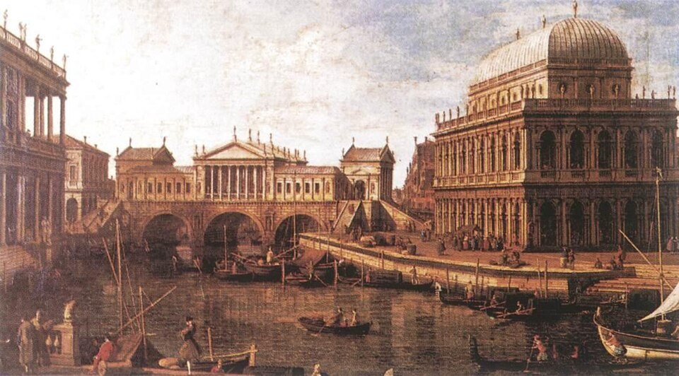
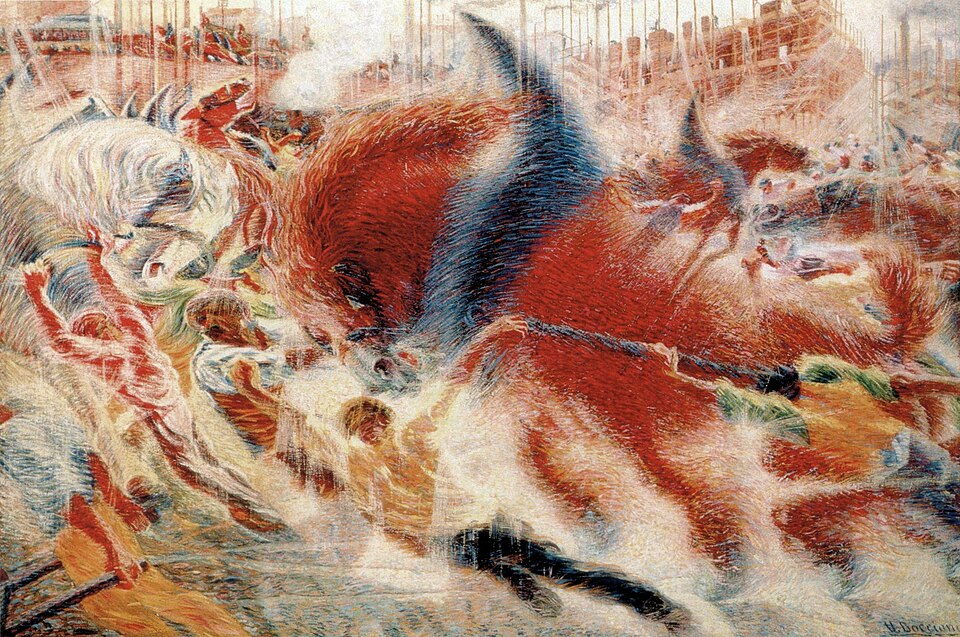
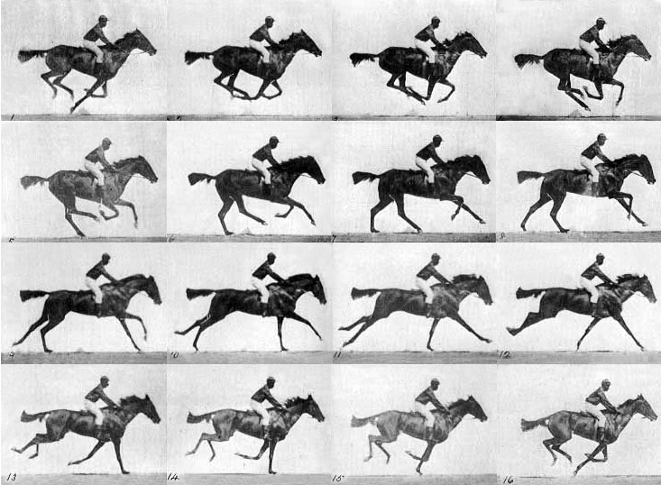
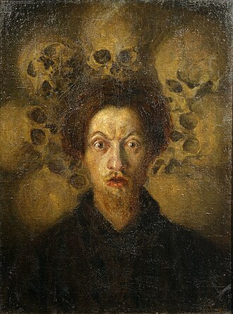
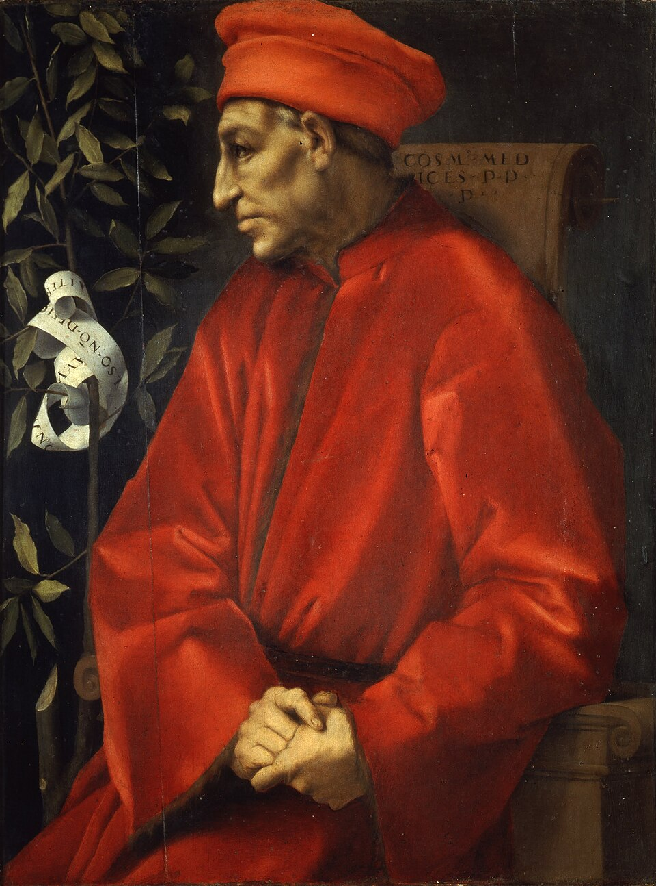
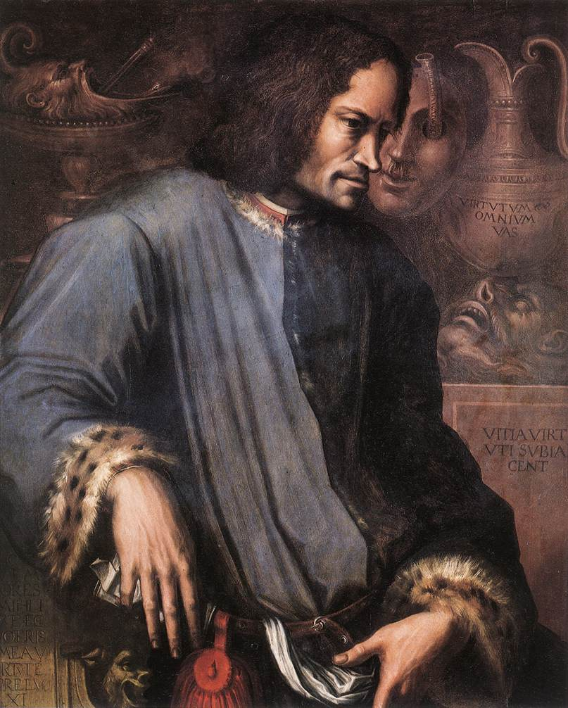
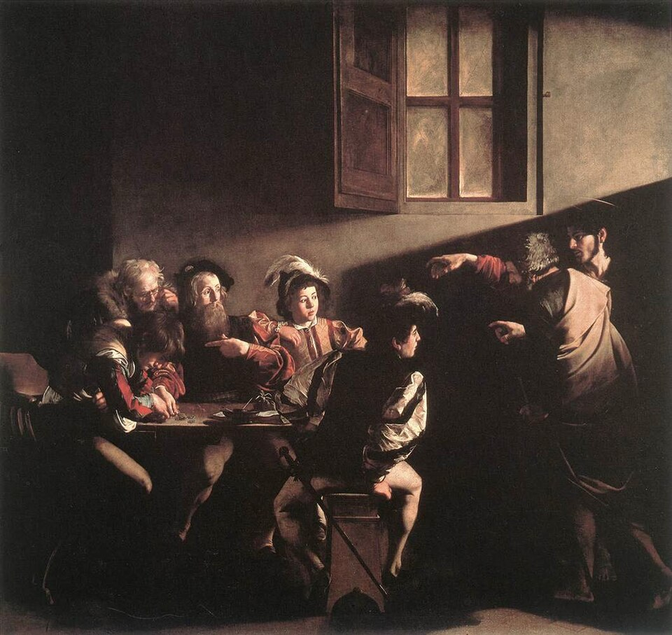
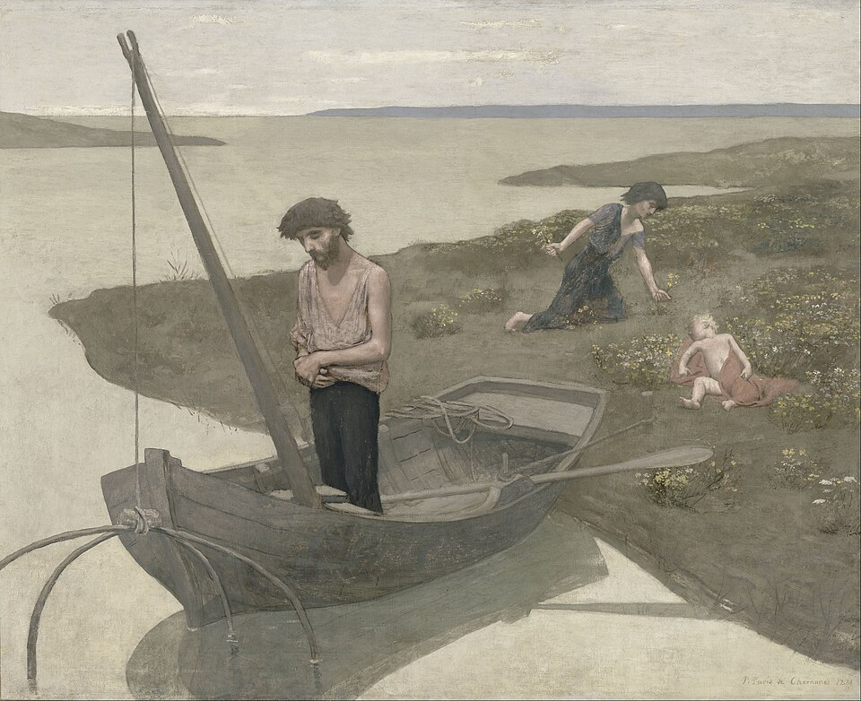
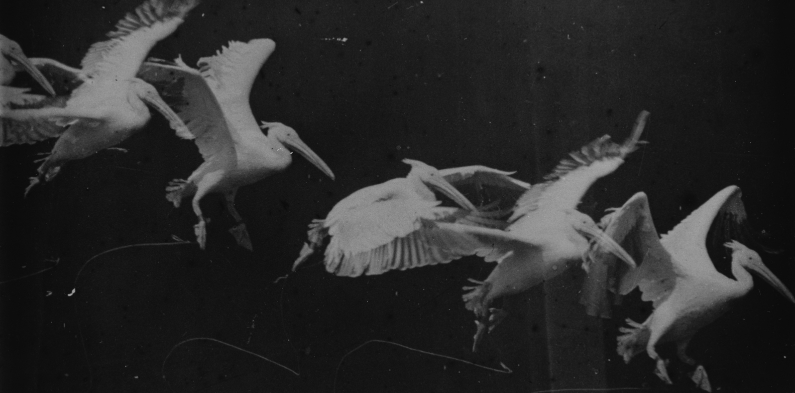
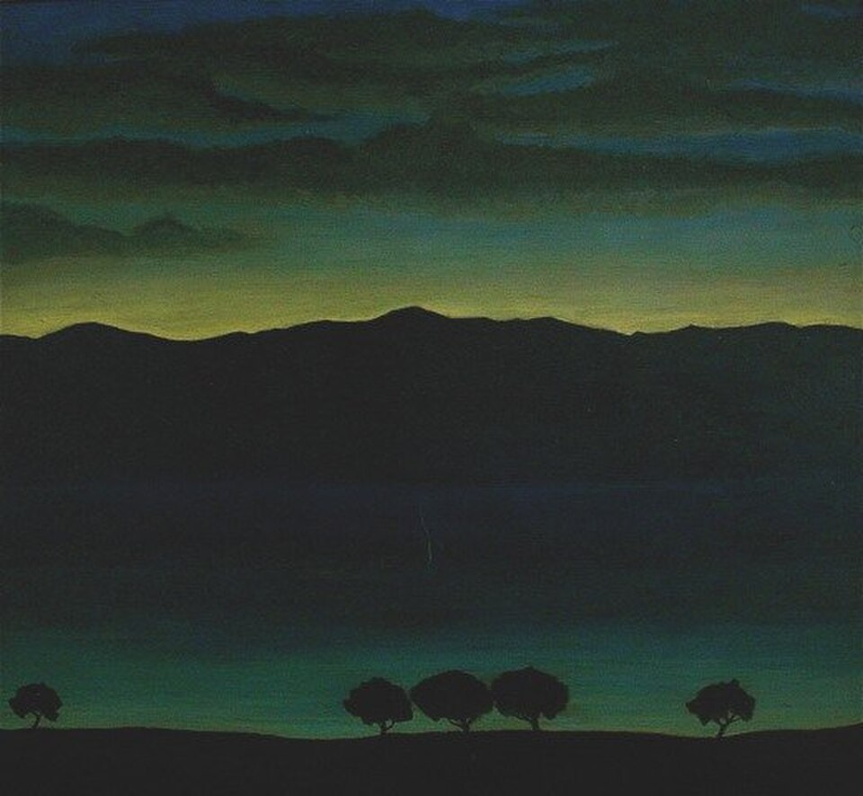

図解：未来派
未来派の成立と展開
- 18〜19世紀

遅れたイタリア観光客に過去を売る
統一・工業化が遅れ - 1909
 マリネッティの宣言速度の美を賛美
マリネッティの宣言速度の美を賛美
過去の文化を破壊 - 1910頃

画家たちの参加ボッチョーニら5人
「画家宣言」を発表 - 1912〜13

 動きを一枚に連続写真に学ぶ
動きを一枚に連続写真に学ぶ
彫刻・騒音にも展開 - 1919〜
 第二未来派ファシズムに接近
第二未来派ファシズムに接近
航空絵画で宣伝
それまでの芸術と何が違うか
象徴主義・ブリュッケと逆美不動・静かな感動速度の美
競走自動車は《ニケ》より美しい過去過去の巨匠に学ぶ過去の文化を破壊
美術館や図書館の破壊を求める多視点動きのない多視点連続する動きを表す
キュビスムの描き方を転用
図版の出典
- 《パッラーディオ建築のあるカプリッチョ》カナレット：出典（Public domain（PD-Art／PD-old-100-expired／PDM））
- 《サモトラケのニケ》作者不詳：出典（CC BY 4.0）
- 《都市の蜂起》ウンベルト・ボッチョーニ：出典（Public domain（PD-Art、作者1916年没・死後100年経過））
- 《疾走する競走馬「アニーG」――『動物の運動』図版626》エドワード・マイブリッジ：出典（Public domain（作者1904年没、1887年刊行、PDM））
- 《空間における連続性の唯一の形態》ウンベルト・ボッチョーニ：出典（Public domain（彫刻PD-old、写真WmpearlによるPD-self））
- 《飛行士ムッソリーニの航空肖像》アルフレード・ガウロ・アンブロージ：出典（Public domain（写真PD-Italy・PD-1996、原作者1945年没））
重要人物
運動を起こした詩人
未来派の画家
 ウンベルト・ボッチョーニ画家・彫刻家中心人物。大戦中、軍の訓練で落馬し33歳で死去
ウンベルト・ボッチョーニ画家・彫刻家中心人物。大戦中、軍の訓練で落馬し33歳で死去- ジャコモ・バッラ画家《鎖につながれた犬のダイナミズム》。後に抽象へ
- ジーノ・セヴェリーニ画家誰よりも早くキュビスムに接する。大戦後は新古典主義へ

ルイジ・ルッソロ画家・音楽家ノイズの美学を唱え、騒音楽器を発明- カルロ・カッラ画家文字で躍動を表す。キリコと出会い画風を変える
- ウーゴ・ピアッティ協力者ルッソロと共同でイントナルモーリを発明
連続写真の先駆者
時代と周囲の人
イタリアの歴史と近代化
速度の美を掲げた未来派
動画 1:49～未来派は、20世紀初頭にイタリアを中心に登場した芸術家集団です。それまでの伝統との決別を掲げ、速度に美を見いだしました。イタリアは15世紀のルネサンス以来、近世の芸術の中心でしたが、後にその座をパリへ譲ります。未来派は、そうした歴史を持つイタリアに新しい芸術を生み出そうとする運動でした。
芸術の中心だったイタリアとその後
動画 2:10～近世のイタリアが芸術の中心となった大きな要因の一つは、経済的な豊かさです。中世の十字軍遠征の中継地となり、交易で大きな富を得ました。商人を中心とする市民の力が強まり、フィレンツェではメディチ家らの支援によってルネサンスが花開きます。地中海交易の要となったヴェネツィアとともに、経済の中心を担いました。力を持つ市民がパトロンとなり、芸術家の活動を支えたのです。


画像を拡大 ＋《コジモ・イル・ヴェッキオの肖像》
- 作者
- ヤコポ・ダ・ポントルモ
- 制作時期
- 1519～1520年頃
- 所在地・所蔵
- ウフィツィ美術館、フィレンツェ
- 素材・形式
- 油彩・板
- 原題
- Ritratto di Cosimo il Vecchio
- 別名
- Portrait of Cosimo the Elder
出典・画像について


画像を拡大 ＋《ロレンツォ・デ・メディチの肖像》
- 作者
- ジョルジョ・ヴァザーリ
- 制作時期
- 1533～1534年頃
- 所在地・所蔵
- ウフィツィ美術館、フィレンツェ（1890年目録1578）
- 素材・形式
- 油彩・板
- 原題
- Ritratto di Lorenzo Il Magnifico
- 別名
- Portrait of Lorenzo de’ Medici
出典・画像について
もう一つは、カトリックの総本山であるローマの存在です。現在はローマ市内のヴァチカン市国に総本山が置かれています。中世から近世にかけて、教皇の権力は大きなものでした。ルターを端緒としてプロテスタントが生まれると、イタリアは対抗宗教改革のバロック美術の中心となります。劇的な明暗で見る人の心を動かし、信者を増やそうとする活動にも、その力が表れていました。経済と宗教の双方で中心だったことが、芸術の繁栄につながったのです。


画像を拡大 ＋《聖マタイの召命》
- 作者
- カラヴァッジョ
- 制作時期
- 1599～1600年
- 所在地・所蔵
- サン・ルイジ・デイ・フランチェージ聖堂、コンタレッリ礼拝堂、ローマ
- 素材・形式
- 油彩・カンヴァス
- 原題
- The Calling of Saint Matthew
出典・画像について
その二つの基盤が揺らぐと、イタリアは芸術の中心から離れていきます。大航海時代にはアジアとの交易で地中海を通る必要がなくなり、経済の覇権はスペインなどへ移りました。17世紀以降の科学の発展も、神を中心とする世界観を揺るがします。一方、芸術では後進だったフランスは絶対王政の権力を背景に美術政策を進め、18世紀にはフランスやイギリスに独自の美術が花開きました。
貴族の間では、イタリアへ学びに行くグランド・ツアーが流行しました。しかし、学ぶ対象は当時の芸術家ではなく過去の巨匠でした。イタリアの画家は、名所旧跡を描く都市景観図「ヴェドゥータ」を制作し、訪れた観光客へ販売しました。観光客の過去への関心を、現地の芸術家も利用したのです。

《パッラーディオ建築のあるカプリッチョ》
- 作者
- カナレット
- 制作時期
- 1750～1760年
- 所在地・所蔵
- パルマ国立美術館、ピロッタ宮殿（目録284）
- 素材・形式
- 油彩・カンヴァス
- 原題
- Capriccio con edifici palladiani
- 別名
- Capriccio: a Palladian Design for the Rialto Bridge, with Buildings at Vicenza
- 動画の年代
- 1740年代
出典・画像について
動画の年代 1740年代 と確認済み掲載年代 1750～1760年 を分けて記録。
画像出典：Giovanni Antonio Canal
Public domain（PD-Art／PD-old-100-expired／PDM）
作品情報：作品・画像・利用条件 · 所蔵館の作品ページ
統一の遅れと近代化の賛美
動画 4:25～近代のイタリアは小国が分立し、権力争いで不安定でした。統一は19世紀後半まで遅れ、近代化にも乗り遅れます。経済と宗教の力の衰え、統一の遅れが、近代美術で目立ちにくくなった背景でした。その後の工業化は急速でしたが、恩恵はトリノやミラノなど北部に集中し、農業中心の南部との経済格差が広がります。南部からアメリカ大陸へ多くの移民が渡り、1900年からの10年間で約600万人に上ったとされます。
植民地政策にも出遅れ、1890年代には独立国エチオピアの植民地化を試みて失敗しました。首相ジョヴァンニ・ジョリッティは議会制の確立、労働環境や選挙法の改善などに手腕を発揮しましたが、国民の心に訴える政治理念に欠けていたとされます。後にムッソリーニの台頭を許すことにもつながりました。イギリスやフランスに比べた遅れに、国民の不満がたまっていたのです。
19世紀後半、フランスやベルギーの象徴主義は不安や破滅を表しました。その背景には、産業革命で急速に発展する社会への反発があります。ドイツ表現主義のブリュッケも、都市でのブルジョワ階級の生活に反発した点では共通すると考えられます。対してイタリアの未来派は、近代社会の機械化を奨励し、賛美します。とりわけ機械の速さを美と捉え、急速な都市の発展や技術の進歩が素晴らしい未来をもたらすと伝えようとしました。近代化に遅れたイタリアだからこそ、発展を促す方向へ進んだのです。


画像を拡大 ＋《貧しき漁夫》
- 作者
- ピエール・ピュヴィス・ド・シャヴァンヌ
- 制作時期
- 1881年
- 所在地・所蔵
- オルセー美術館（RF506）
- 素材・形式
- 油彩・カンヴァス
- 原題
- Le Pauvre Pêcheur
- 別名
- The Poor Fisherman
出典・画像について
未来派宣言の11条
1909年の未来派宣言（第1〜8条）
動画 6:39～発端となったのは、イタリアの小説家・詩人フィリッポ・トンマーゾ・マリネッティです。1909年、フランスの新聞『ル・フィガロ』に発表した「未来派宣言」に、芸術家が賛同して運動を展開しました。宣言は11条からなり、危険、反抗、速度、機械、そして過去の文化の破壊を掲げます。以下は、朗読された各条の内容を説明文に直したものです。暴力や女性蔑視も含む、当時の主張として読み取る必要があります。
第1条は危険への愛と、精力や冒険に満ちた歌を求めます。第2条は勇気、無謀、反抗を詩の主要な要素とします。第3条では、従来の文学がたたえた不動、感激、睡眠に対して、攻撃、眠れぬ熱情、疾走、跳躍、殴打を詩の題材として掲げます。第4条は、世界の新しい美として速度の美を主張します。爆発するような音を響かせ、砲弾のように走る競走自動車は、《サモトラケのニケ》より美しい、とするのです。
第5条はハンドルを握る人を歌い、車の軸が大地を貫くほどの運動を思い描きます。第6条は、自然の根源的な要素に熱情を加えるため、詩人自身も激しく力を注がなければならないとします。第7条は、闘争なしに美はなく、攻撃性のない傑作もないと主張します。詩は未知の力へ攻め込み、それを人間に屈服させるものとされました。第8条は、世紀の最先端に立ちながら、なぜ過去を見るのかと問います。時と空間は既に古いものとなり、速度によって永遠に続く現在を創造した、と宣言します。
戦争と近代都市を歌う第9〜11条
動画 9:09～第9条は、戦争を世界に健康をもたらす唯一のものとして賛美します。軍国主義、愛国主義、無政府主義者の破壊行為、殺人の理想、女性蔑視までを称揚する過激な内容です。第10条は、美術館や図書館を破壊し、道徳、女々しさ、打算的・功利的な手段を打ち破ることを求めます。これらは未来派宣言の歴史的な主張であり、教材が支持する価値観ではありません。
第11条は、労働、快楽、反逆に熱狂する群衆と、近代都市の革命的な騒めきを歌うとします。電気の月光を浴びる工場や工廠、煙を吐く蛇のような汽車をのみ込む駅、煙の糸で雲につながる製作工場、川を跳び越す橋、水平線をかすめる冒険的な戦列艦、鉄の馬のように鉄路を走る機関車、翼の音が群衆の喝采にも似た飛行機が並びます。近代の産業、交通、都市のエネルギーが、詩の対象となるのです。
速度の美と過激な理念
速度の美と過去へ戻らない主張
動画 10:27～未来派宣言でとりわけ注目されるのは第4条です。《サモトラケのニケ》は古い美意識の象徴として置かれています。永遠を思わせる重厚な姿が、見る人へ静かな感動を与える作品です。第3条で批判された不動や眠りを代表するものとも読めます。それに対しマリネッティは、爆音を上げて走る機械を、新しい速度の美の象徴としました。第5条では、それを操縦する運転手も賛美します。命知らずの速度への熱狂は、フェラーリをはじめ、ランボルギーニ、アルファ・ロメオなどイタリアの自動車やモータースポーツの価値観にも通じると考えられます。
画像を拡大 ＋
《サモトラケのニケ》
- 作者
- 作者不詳
- 制作時期
- 紀元前200～175年頃
- 所在地・所蔵
- ルーヴル美術館、パリ
- 素材・形式
- 大理石彫刻
- 原題
- Victoire de Samothrace
- 別名
- Winged Victory of Samothrace
出典・画像について
工業の発展は大量生産と大量消費を促し、人類はかつてない速度で進歩しました。鉄道や自動車によって、人だけでは出せない速さも得ています。第8条が問うのは、不可能を可能にする時代が目前にあるのに、なぜ後ろを向くのかということです。機械生産に疑問を投げかけたアーツ・アンド・クラフツ運動のモリスとは、対照的な立場でした。
過激な主張と画家たちの参加
動画 12:02～第9条は比喩にとどまらず、暴力こそ世界を健全にする唯一の方法だと主張します。マリネッティは後にファシズムへ傾倒しました。第10条も過去の文化の破壊を掲げ、別の文章では当時のイタリアを中古品市場と呼び、創造的な価値がないと断じています。伝統に反対する運動の中でも、特に過激でした。
若いイタリアの芸術家はこの宣言に大きく賛同し、伝統的な絵画から動きを取り入れる絵画へ変わりました。中心人物ウンベルト・ボッチョーニらの「未来派画家宣言」は、その後を追うように発表されます。「美術評論家は有害にして無益である」とする一文にも、同じような過激さが表れていました。
同一作品自由画像と公式自由再利用条件を確認できず保留。
《ラ・ボヘミエンヌ》
- 作者
- ジーノ・セヴェリーニ
- 制作時期
- 1905年
- 所在地・所蔵
- コルトーナ・エトルリア・アカデミー（Sev.002）
- 素材・形式
- パステル・補強した紙板
- 原題
- La Bohémienne
- 別名
- La vagabonda
出典・画像について
作品情報：作品・画像・利用条件 · 所蔵館の作品ページ
所蔵館同一画像・自由条件まで確定できず保留。
《ピガールの踊り子》
- 作者
- ジーノ・セヴェリーニ
- 制作時期
- 1912年
- 所在地・所蔵
- ボルティモア美術館（チェッルーティ財団公式解説の記載）
- 素材・形式
- 原題
- Danseuse à Pigalle
- 別名
- Dancer at Pigalle
出典・画像について
作品情報：作品・画像・利用条件
絵画・彫刻・文字・騒音
主要な画家と連続写真
動画 13:22～画家としての中心は、ジャコモ・バッラ、ジーノ・セヴェリーニ、ルイジ・ルッソロ、カルロ・カッラ、ウンベルト・ボッチョーニの五人です。共同で宣言を発表し、その理念に沿ってスピード感やダイナミズムを表す作品を制作しました。初期のボッチョーニ《都市の蜂起》では、建設現場の前で、馬や労働者が荒々しく交錯し、旋回します。近代産業都市のエネルギーが象徴されています。

《都市の蜂起》
- 作者
- ウンベルト・ボッチョーニ
- 制作時期
- 1910年
- 所在地・所蔵
- ニューヨーク近代美術館（507.1951）
- 素材・形式
- 油彩・カンヴァス
- 原題
- La città che sale
- 別名
- The City Rises／蜂起する都市
出典・画像について
さらに、連続する時間を一枚の絵に収めようとしました。着想源は19世紀後半の連続写真です。イギリスの写真家エドワード・マイブリッジは、疾走する馬の連続撮影に成功しました。その連続写真は、動いて見える錯覚を引き起こしました。フランスの生理学者エティエンヌ＝ジュール・マレーは写真銃を発明し、動作の各段階を一枚の写真に収めます。未来派はこの重ね合わせを、ダイナミズムの表現へ取り入れようとしたのです。

《疾走する競走馬「アニーG」――『動物の運動』図版626》
- 作者
- エドワード・マイブリッジ
- 制作時期
- 1887年刊行
- 所在地・所蔵
- 同図版の所蔵例：米国議会図書館（2006691786）
- 素材・形式
- 連続写真（写真集図版のデジタル複製）
- 原題
- Animal Locomotion, Plate 626: Annie G. galloping
- 別名
- Muybridge race horse gallop
出典・画像について


画像を拡大 ＋《飛ぶペリカンの連続写真》
- 作者
- エティエンヌ＝ジュール・マレー
- 制作時期
- 1882年頃
- 所在地・所蔵
- 原写真の所蔵先未確認
- 素材・形式
- クロノフォトグラフィ
出典・画像について
エティエンヌ＝ジュール・マレーによるペリカンの飛翔の連続写真。
画像出典：Étienne-Jules Marey / Wikimedia Commons
Public domain
作品情報：画像出典・利用条件 · 作品照合資料 · 所蔵館の作品ページ
制作メモ
Commons公開版には色調補正の記録がある。
代表例がバッラの《鎖につながれた犬のダイナミズム》です。歩く犬と人間の足を重ね、一枚の絵で時間の連続を表します。速さというより足をばたつかせているようにも見えますが、それまでになかった表現を探る試みでした。バッラは点描によって動作を連続的に表した絵も制作しました。現在では見慣れた表現ですが、100年以上前に、複数の動作を一画面へ収めようとしたのです。
公式Estate Balla/ARS/SIAE。educational use only限定を一般自由転載扱いしない。
《鎖につながれた犬のダイナミズム》
- 作者
- ジャコモ・バッラ
- 制作時期
- 1912年
- 所在地・所蔵
- バッファローAKG美術館（1964:16）
- 素材・形式
- 油彩・カンヴァス
- 原題
- Dinamismo di un cane al guinzaglio
- 別名
- Dynamism of a Dog on a Leash
出典・画像について
作品情報：作品・画像・利用条件 · 所蔵館の作品ページ
公式作品紹介は確認、自由画像条件未確認。
《バルコニーを走る少女》
- 作者
- ジャコモ・バッラ
- 制作時期
- 1912年
- 所在地・所蔵
- ミラノ市立近代美術館（GAM）の公式紹介作品
- 素材・形式
- 油彩・カンヴァス
- 原題
- Bambina × balcone
- 別名
- Girl Running on a Balcony
出典・画像について
作品情報：作品・画像・利用条件 · 所蔵館の作品ページ
彫刻・文字・騒音
動画 15:15～未来派がもう一つ取り入れたのが、キュビスムの描き方でした。本来は複数の視点を一つの画面に収めるものですが、未来派は動きのない多視点描写を否定し、連続する動きを表す方法へ置き換えます。似た描き方でも、理念は異なります。このキュビスム的な時間分解は、彫刻によりよく表れているともいえます。ボッチョーニの《空間における連続性の唯一の形態》には、動作が重なり合い、静止した彫刻からも動く姿を想像させる効果があります。
画像を拡大 ＋
《空間における連続性の唯一の形態》
- 作者
- ウンベルト・ボッチョーニ
- 制作時期
- 1913年原型、1931年または1934年鋳造
- 所在地・所蔵
- ニューヨーク近代美術館（231.1948）
- 素材・形式
- ブロンズ
- 原題
- Forme uniche della continuità nello spazio
- 別名
- Unique Forms of Continuity in Space
- 動画の年代
- 1913年
出典・画像について
動画の年代 1913年 と確認済み掲載年代 1913年原型、1931年または1934年鋳造 を分けて記録。原型の制作後、作者没後に鋳造されたブロンズ。写真：Wmpearl。
画像出典：Wmpearl
Public domain（彫刻PD-old、写真WmpearlによるPD-self）
作品情報：作品・画像・利用条件 · 所蔵館の作品ページ
カッラの《干渉主義者の示威運動》は、文字や断片を乱雑に寄せ集めたように見えます。しかし「FREE」や「TRRR」などの文字、スポーツに関わる語、イタリア国旗などが、疾走感や愛国心を感じさせます。未来派は人体や物の運動だけでなく、文字によっても躍動を表そうとしました。
Commons削除・2037復帰カテゴリ。原作者1966没の自由条件未確保。
《干渉主義者の示威運動（参戦宣言、自由言語）》
- 作者
- カルロ・カッラ
- 制作時期
- 1914年
- 所在地・所蔵
- マッティオリ・コレクション、ミラノ市立20世紀美術館へ長期貸与
- 素材・形式
- コラージュ
- 原題
- Manifestazione interventista
- 別名
- Interventionist Demonstration
出典・画像について
作品情報：作品・画像・利用条件 · 所蔵館の作品ページ
音楽家の家族に生まれたとされるルッソロは、絵画に加え未来派の音楽にも取り組みました。交流のあったウーゴ・ピアッティと共同で、騒音を生み出す楽器イントナルモーリを発明します。自動車や飛行機の爆音にも通じる音を、音楽の対象としたのです。未来派は、絵画や彫刻、音楽など多方面に理念を展開しました。
 画像を拡大 ＋
画像を拡大 ＋
《ミラノの実験室におけるルッソロ、ピアッティとイントナルモーリ》
- 作者
- ルイジ・ルッソロ／ウーゴ・ピアッティ（楽器制作）、撮影者不詳
- 制作時期
- 1913年
- 所在地・所蔵
- ミラノ（撮影地）、フランス国立図書館Gallica（1913年掲載誌のデジタル資料）
- 素材・形式
- 白黒写真
- 原題
- Luigi Russolo and assistant Ugo Piatti in their Milan studio with Intonarumori
出典・画像について
戦争、その後の展開
大戦とその後の進路
動画 17:44～第一次世界大戦で、イタリアはかつて三国同盟を組んだドイツやオーストリアに対し、イギリス・フランス側で参戦しました。500万人以上を動員し、60万人を超える戦死者を出しながら戦勝国となります。多彩な才能を見せていたボッチョーニも、軍の訓練中に落馬して33歳で亡くなりました。表現主義のフランツ・マルクらと同様、戦争によって芸術家の命が失われたのです。
ボッチョーニを失った初期の仲間は、戦後に別の道を歩みます。もともと過激な表現の少なかったバッラは、ファシズムと接近することもありましたが、独自の抽象絵画へ進みました。セヴェリーニは、仲間の誰よりも早くキュビスムに接し、その手法を取り入れていました。しかし大戦が始まると、ピカソらと同じ秩序への回帰のもとで新古典主義へ変わり、最終的にはキュビスムに似た様式で風俗画を描く独特の方法を確立しました。
Commons現行自由画像未確保。1958没原作の自由条件を確定できない。
《修道女と風景》
- 作者
- ジャコモ・バッラ
- 制作時期
- 1925年
- 所在地・所蔵
- 個人蔵（公開作品資料記載）
- 素材・形式
- 油彩・板
- 原題
- Nuns and Landscape
出典・画像について
作品情報：作品・画像・利用条件
原作・配信写真の自由条件未確保。現在展示先は未確定、財団記録に限定。
《踊り子のダイナミズム》
- 作者
- ジーノ・セヴェリーニ
- 制作時期
- 1912年
- 所在地・所蔵
- ユッカー・コレクション、ミラノ（ラギアンティ財団資料記載）
- 素材・形式
- 油彩・カンヴァス
- 原題
- Dinamismo di una ballerina
- 別名
- Dynamism of a Dancer
出典・画像について
作品情報：作品・画像・利用条件
刷り個体と自由条件未確定。油彩と断定せず、特定所蔵刷りを代用しない。
《コンサート（刷り個体未確定）》
- 作者
- ジーノ・セヴェリーニ
- 制作時期
- 1955年
- 所在地・所蔵
- 動画の刷り個体は未確定。同構図の記録：ミラノ、スフォルツェスコ城アキーレ・ベルタレッリ版画コレクション
- 素材・形式
- 色刷リトグラフ・紙（同構図の公式作品記録。動画の刷り個体は未確定）
- 原題
- Le concert
出典・画像について
作品情報：作品・画像・利用条件 · 所蔵館の作品ページ
ノイズの美学とイントナルモーリを提示したルッソロは、ボッチョーニと並ぶ未来派の信奉者でした。しかし晩年に画業へ専念した時期には、激しさを離れ、落ち着いた風景を描いています。カッラは大戦前に参戦を訴える過激な作品も描きましたが、1916年にジョルジョ・デ・キリコと出会って画風を変えます。キリコの形而上絵画に影響され、シュルレアリスムの先駆けとなる作品を制作しました。


画像を拡大 ＋《ノットゥルノ（夜想曲）》
- 作者
- ルイジ・ルッソロ
- 制作時期
- 1945年
- 所在地・所蔵
- 現在の所蔵未確定
- 素材・形式
- 油彩・板
- 原題
- Notturno
出典・画像について
ルイージ・ルッソロの1945年の油彩画。現所蔵は未公表。掲載画像は、CommonsでPD-Artとされる原画の複製。
画像出典：Luigi Russolo / Wikimedia Commons（WikiArt）
Public domain (PD-Art)
作品情報：画像出典・利用条件 · 作品照合資料 · 所蔵館の作品ページ
制作メモ
2011年の競売記録で確認した。
原作者1966没の自由画像条件未確保。GAC公開を転載許諾とみなさない。
《出現の楕円形》
- 作者
- カルロ・カッラ
- 制作時期
- 1918年
- 所在地・所蔵
- ローマ国立近代・現代美術館
- 素材・形式
- 油彩・カンヴァス
- 原題
- L’ovale delle apparizioni
- 別名
- The Oval of the Apparitions
出典・画像について
作品情報：作品・画像・利用条件 · 所蔵館の作品ページ
第二未来派とロシアへの影響
動画 19:19～多くの美術書は大戦勃発までで未来派の説明を終えますが、運動は続きました。戦後の大きな変化はムッソリーニの台頭と独裁政権です。戦勝国でも得た成果が少ないという不満や社会の混乱が、その台頭を許しました。マリネッティはムッソリーニへ接近し、1919年の「ファシスト宣言」の作成にも関与します。ムッソリーニ政権期の活動は第二未来派、または新未来派と呼ばれ、プロパガンダにも用いられました。主な対象の一つがアエロピットゥーラ、航空絵画です。
画像を拡大 ＋
《飛行士ムッソリーニの航空肖像》
- 作者
- アルフレード・ガウロ・アンブロージ
- 制作時期
- 1930年
- 所在地・所蔵
- 個人蔵
- 素材・形式
- 油彩・カンヴァス
- 原題
- Aeroritratto di Mussolini aviatore
- 別名
- Aeroritratto di Benito Mussolini aviatore
出典・画像について
未来派はロシアの芸術にも影響しました。複数の視点から対象を捉えるキュビスムと、連続する動きを捉える未来派を合わせようとする試みです。1910年代から展開されるロシアの前衛芸術には、イタリア未来派が先駆けとしてあったことを押さえておきたいところです。
要点まとめ
- 未来派は20世紀初頭のイタリアで、伝統との決別と、機械がもたらす速度の美を掲げた。
- 近代化の遅れを背景に、他国の前衛が近代社会へ反発する一方で、未来派は都市や工業の発展を賛美した。
- マリネッティの1909年「未来派宣言」は11条からなり、危険・反抗・機械・速度とともに、戦争賛美や文化破壊も主張した。
- ボッチョーニら五人の画家は、近代都市のエネルギーやダイナミズムを表す作品を制作した。
- マイブリッジとマレーの連続写真、キュビスムの描き方を手掛かりに、動作の重ね合わせで時間を表そうとした。
- カッラは文字や断片で躍動感を示し、ルッソロとピアッティはイントナルモーリで騒音を音楽の対象にした。
- 第一次世界大戦でボッチョーニが亡くなると、初期の仲間は抽象、古典回帰、風景、形而上絵画など異なる方向へ進んだ。
- 未来派は戦後も続き、第二未来派はファシズムの宣伝にも関わった。また、ロシア前衛にも影響した。
確認問題
答えを考えてから開いてください。選択問題は選ぶとすぐ正誤と解説が出ます（選択肢の順番は開くたびに変わります）。各問題のリンクから該当の章や作品カードへ戻れます。
選択問題：0／4問回答・正解0
A. 一問一答答えを考えてから開く
問1未来派が機械に見いだした、新しい美は何か。
答えを見る
問21909年に未来派宣言を発表した人物は誰か。
答えを見る
問3未来派は連続写真から、どのような表現を取り入れたか。
答えを見る
B. 4択選ぶとすぐ正誤と解説
問4騒音を生み出す楽器イントナルモーリを共同で発明した組合せはどれか。
→ 本文で確認（彫刻・文字・騒音）
問5未来派によるキュビスムの描き方の利用について、本文の説明に合うものはどれか。
→ 本文で確認（彫刻・文字・騒音）
問6カッラがキリコと出会って影響を受けた様式はどれか。
→ 本文で確認（大戦とその後の進路）
C. 図版問題画像を見て答える
問7この作品の作者は誰か。
→ 作品カードで確認
問8この彫刻の作者と、本文で説明する表現上の特徴を答えよ。